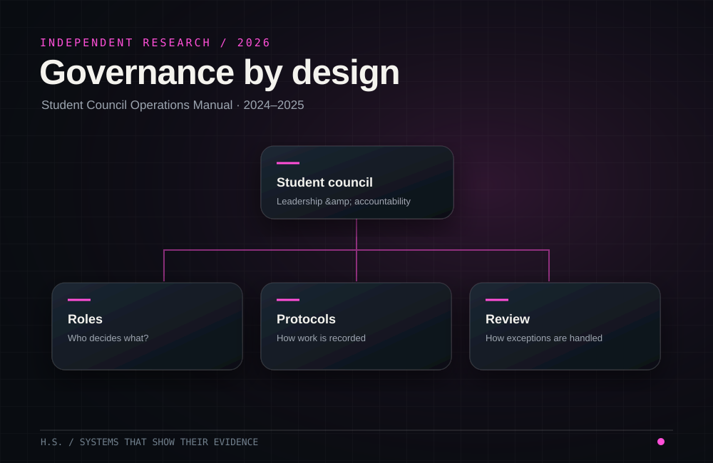

← Selected work
Governance design · Operational documentation · Student leadership
Student council operations
A structured student-council operating manual designed to make roles, escalation paths and institutional processes understandable and repeatable.
Evidence status: Completed school governance project; impact metrics from the original résumé remain self-reported.

The question
behind the work.
A student council is a small institution: it succeeds when responsibilities, decisions, evidence and escalation routes are defined rather than left to informal expectations.
What was designed
A different kind of systems research
The project translates a systems-design mindset into organizational practice: identify stakeholders, trace decisions and reduce ambiguity through transparent procedure.
The original résumé reports operational improvements. These figures have not been independently validated for the public portfolio, so the case study does not market them as verified causal impacts.
Institutions become more resilient when their knowledge survives the people who first organized them.